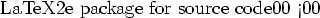

| URL | REFERENCES |
| http://gso.uri.edu/cgi-bin/nc/data/fnoc1.nc | the entire data set |
| http://gso.uri.edu/cgi-bin/nc/data/fnoc1.nc?u | u from the data set |
| http://gso.uri.edu/cgi-bin/nc/data/fnoc1.nc/u | u using the virtual file system syntax |
| http://gso.uri.edu/cgi-bin/nc/data/fnoc1.nc?u<10 | all variables given that u is  10 (Makes sense for sequence data only) |
| http://lake.mit.edu/cgi-bin/jg/bloom/level1 | all variables in level1 |
| http://lake.mit.edu/cgi-bin/jg/bloom/level1/temp | only temp in level1 |